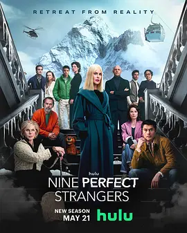

5.9
九个完美陌生人 第二季
Nine Perfect Strangers Season 2
2025
美国
评分 5.9
导演:
乔纳森·莱文 / 安东尼·拜恩
演员:
妮可·基德曼 / 克里斯汀·芭伦斯基 / 马克·斯特朗 / 亨利·戈尔丁 / 丽芙·乌曼
类型:
剧情,悬疑,惊悚
剧情简介
全新一季里，玛莎（妮可·基德曼 饰）再度以那种近乎不真实的冷静姿态现身，而这一次，她将疗养中心迁到了风景幽深、气候潮湿的爱尔兰乡间。新建成的中心被环绕在低垂的薄雾里，清晨的草地湿漉漉的，空气中夹着泥土与海风的味道。九位怀抱不同秘密、在生活中踉跄前行的客人，带着各自的伤口踏进这片看似宁静的土地。抵达的第一晚，玛莎便以“一次重新开始”的名义，安排众人围坐在壁炉前进行自我揭露。火光摇曳，照亮每个人隐而不发的神情。克里斯汀·芭伦斯基饰演的一位高压企业家嗓音干脆，却在分享过去时犹豫片刻；马克·斯特朗的角色沉沉寡言，像随时准备逃离；亨利·戈尔丁饰演的旅客在笑容里藏着躁动，而丽芙·乌曼所饰的老妇人则以格外平静的语气讲述人生，仿佛经历远超众人。随着疗程展开，他们被要求参与森林冥想、极限耐受训练、深夜情绪暴露仪式等活动。表面上是疗愈，实际上更像是一场逐步剥离他们伪装的过程。玛莎的方式比以往更直接，她以一种介于温柔与操控之间的姿态介入所有人的情绪起伏，那些看似体贴的提问，总能精准触到每个人最脆弱的部位。天色日渐阴沉，海风不断敲击房屋，压抑感随之弥漫。九位陌生人的关系在相互依赖和相互猜疑间摇摆，而玛莎每一次出现，都像推动某种看不见的力量向前。度假中心的宁静逐渐被裂缝撕开，众人开始意识到自己不仅是在疗愈旅程中，更像被卷入一场关于信任、控制与自我救赎的试炼。